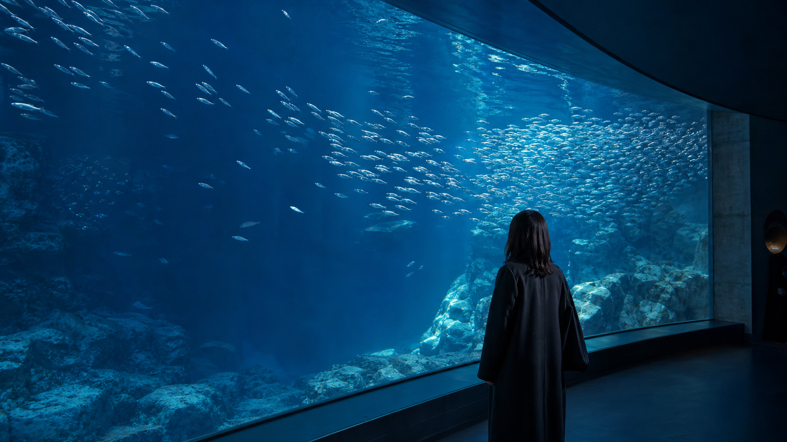
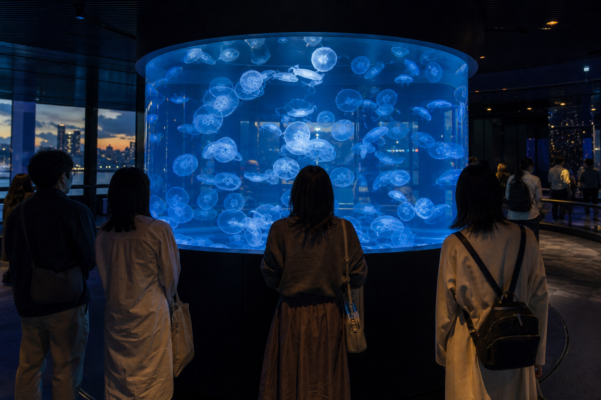
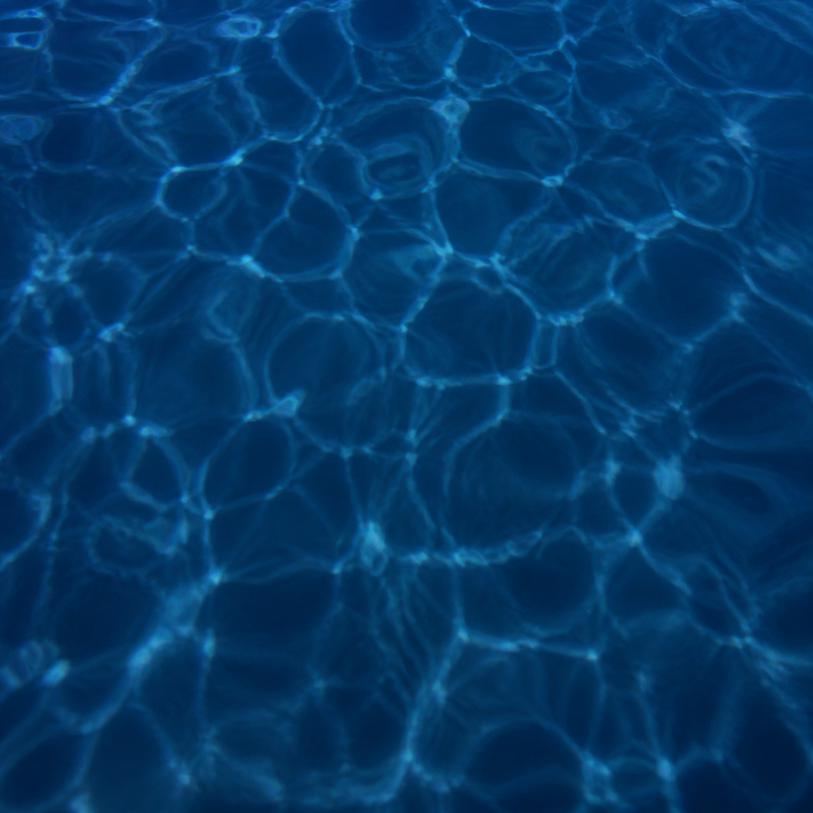

潮の水槽
干潟で暮らす小さな生きもの。



東京・港側 / 2026.07.29
水の中に、少し寄り道。
VISIT
暑い午後は、大水槽とクラゲの展示室が比較的ゆっくり見られます。港側入口から入ると、最初に海のゆらぎを感じる展示室へ続きます。
PICK UP
照明を少し落とした展示室で、飼育スタッフがクラゲの動きや育ち方を案内します。話のあとも、そのまま展示室を見て回れます。
クラゲ展示室 / 約15分
大水槽前 / 約20分
クラゲ展示室 / 約20分
干潟で暮らす小さな生きもの。
青の奥をゆっくり泳ぐ魚たち。
光の中をほどけるように漂う。